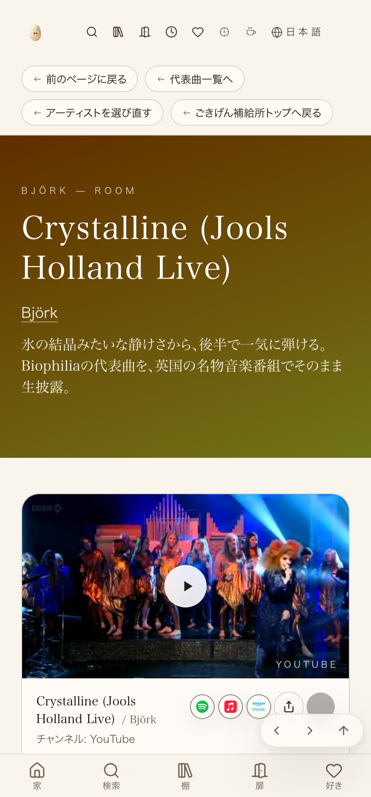

① 何を直したか
素材 https://youtu.be/yHyCSVfYdTg（投稿者realraylor）のBjörk「Crystalline」Jools Holland Live版を、曲ページとして新規作成（Björkの曲一覧の1番目）。「パフォーマンス」棚（ライブ・名パフォーマンス棚）と「踊る阿呆に見る阿呆」棚の両方に追加。あわせて、コピー検品でパフォーマンス棚のひとことが曲ページと同じ言い回しになっていた点を差し替え。
② 数字
| 確認項目 | 結果 |
|---|---|
| 新規作成した曲ページ | 1件（Björkのsongs配列・先頭に追加） |
| 追加した棚 | 2棚（パフォーマンス棚／踊る阿呆棚）各1件ずつ＝計2件 |
| 本番URL実測（Node.js fetch） | 3件中3件がHTTP200・該当文字列を含有 |
| mainへの反映 | 2コミット（実装:19ed9f49／コピー差し替え:051369ed） |
③ 押せるリンク
④ スクリーンショット（2026-09-06実測・本番実物）
曲ページを実際にヘッドレスブラウザで開いてキャプチャ（動画は再生していない）。タイトル「Crystalline (Jools Holland Live)」・アーティスト「Björk」・コピー・サムネイルが本番に出ていることが見て分かる。
